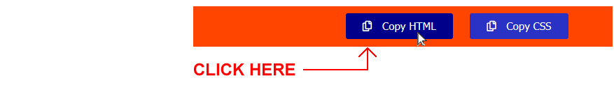
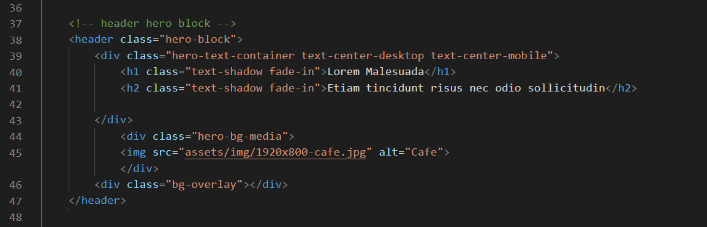
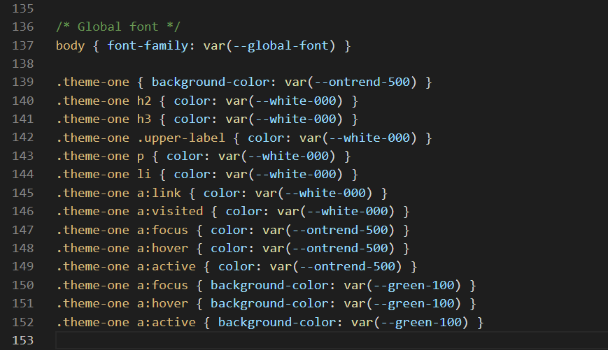
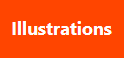
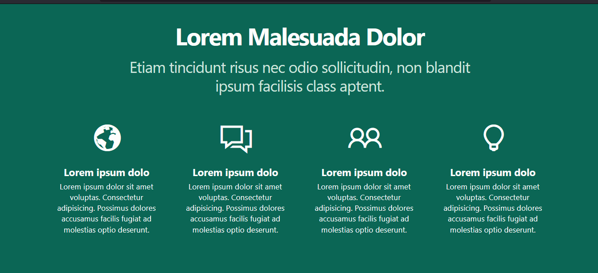

Introduction
Below you can see a screenshot of the single-page website you will create.

- In the <header> or 'hero block' is a background video playing in a continuous loop.
- In the <main> part are six <section> blocks of content in a single-column layout. Two have fawn-coloured background (.theme-2), two have a white (default) coloured background .theme-3, and two have a dark green background .theme-1 and .theme-4.
- All text on the web page is in the 'Playfair Display' font from Google Fonts.
Portfolio project folders and files
Your first task is create the folders you need for this project.
- If a sub-folder named 📁 portfolio does not already exist inside your ‘main’ 📁 websites folder, create it now.
Type its name in all lower-case letters.

- If you have not already done so, download the ui-starter.zip file.
Copy this zip file into your 📁 portfolio folder.

- Unzip this file. It will unzip into a sub-folder named 📁 ui-starter. See below.
 Your 📁 portfolio folder should now look as follows.
Your 📁 portfolio folder should now look as follows.

- You no longer need the downloaded ui-starter.zip file. You can delete it from your 📁 portfolio folder.
Next, to create a sub-folder to hold all the files of your new Fashion project.
- In your 📁 portfolio folder, make a copy of the 📁 ui-starter folder.

- Rename this copied sub-folder to 📁 fashion (all small letters).

✅ All done. You now have created the folder with sub-folders for your Fashion web page project.
Project resources
Your next task is to obtain the text and visual content needed for your Fashion project.
Project text
All the text you need for this web page is in the file below. Only <p> tags have been used for basic formatting.
You do not need to download this file. You can simply copy-and-paste from it.
Project images
Download the following four images to your 📁 fashion/assets/img sub-folder.


Project video and poster image
Download the following video file and poster image to your 📁 fashion/assets/videos sub-folder.

Your 📁 fashion/assets/videos sub-folder already has two files with the same file names of hero-still.jpg and hero-video.mp4.
Overwrite these two sample files with your downloaded video and image file.

✅ That's it. You now have all the resources you need to begin working on your Fashion project.
Launching the UI-Kit app and VS Code
Click the link below to open the UI-Kit app in a new tab of your web browser.

Next, start VS Code and open the two files below.
- fashion/index.html
- fashion/assets/css/custom.css


You are now ready to build the various content ‘blocks’ of your web page.
Creating the ‘hero block’ layout
On the home page of the UI-Kit app, choose the Hero Block option.

On the next screen displayed, choose the following menus and options:

Header Type
Choose Background Video (Full Width)
Animation
Choose Fade In

Buttons
Choose None
When finished, click the Copy HTML button near the top-right of the screen.
In VS Code, display the index.html web page.
Select the opening <header> and closing </header> tags.

Now, paste in the copied text.
Your VS Code screen should now look as shown below.
Because you have not updated any of the default colours in the 'hero block', you do not need to copy any CSS from the UI-Kit app to your custom.css stylesheet.
In VS Code, save your index.html file. Display it in your web browser. It should look as shown below.

Update the 'hero block' with the words from the text.html file.

Save your index.html page and reload it in your web browser.

You have now completed the 'hero block' of your Fashion web page.
Creating the ‘deckhead’ layout
Now it's time to create a ‘deckhead’ or ‘standfirst’ section that will be positioned under the 'hero block' header.
In the UI-Kit app, click the Home option at the top-left of the screen. On the home page, click the One Column option.

On the next screen displayed, choose the following menus and options:

Class Name
Leave this at theme-one.
Paragraphs
Choose 1.
Section Align
Choose Centre.
COLOURS: Background
From the On Trend colours, choose the dark green.

COLOURS: <h2> and <h3>
Choose White.
COLOURS: <p> and <li>
Choose White.
HYPERLINKS: Text
Choose White for Passive and the On Trend green for Active.
HYPERLINKS: Background
For Passive, choose the lightest Green colour.
Standfirst/ Deckhead
Choose Yes.
When finished, click the Copy HTML button near the top-right of the screen.
In VS Code, display the index.html web page. Inside the opening <main> and closing </main> tags, paste in the copied text.
You can delete any unnecessary line breaks.
Your VS Code screen should now look as shown below.

Update the 'deckhead' with the words from the text.html file.

Save your index.html page.
Return to the UI-Kit app. At the top-right of the screen, click the Copy CSS button.

In VS Code, display the custom.css file, scroll down to the bottom, and paste in the copied style rules. Your stylesheet should now look as follows.
Save your custom.css file. In your web browser, your page should now look as shown below.

Next, add the following internal hyperlinks to the text of the 'deckhead.'

Save your index.html web page and reload it in your web browser.

You have now completed this part of your Fashion web page.
Creating the second and third <section> layouts (theme-two) and (theme-three)
Now you will create four section blocks to hold the main content of your web page. Your will use two styles: theme-two and theme-three.
In the UI-Kit app, click the Home option at the top-left of the screen. On the home page, click the One Column option.
On the next screen displayed, choose the following menus and options:
Class Name
Choose theme-two.
Paragraphs
Choose 2.
COLOURS: Background
Choose a light grey colour.
Buttons
Choose One.
Button Style
Choose Rounded.

Pictures
Choose Picture.
When finished, click the Copy HTML button near the top-right of the screen.
In VS Code, display the index.html web page. After the first 'deckhead' <section>, paste in the copied text. You can remove any unnecessary line breaks.
Then paste the copied text a second time below it. You now have two new sections in your web page, each with the same class name of theme-two

Save your index.html page.
Return to the UI-Kit app. At the top-right of the screen, click the Copy CSS button.
In VS Code, display the custom.css file, scroll down to the bottom, and paste in the copied style rule. Your stylesheet should now look as follows.

Save your custom.css file. In your web browser, your index.html page should now look as shown below.

Return to the UI-Kit app. Make the following one change.
Class Name
Choose theme-three.
By default, the background colour of the section is white. This is what you want. So you do not need to make any further style updates.
Click the Copy HTML button near the top-right of the screen.
In VS Code, display the index.html web page.
Paste in the copied text - twice. Once after the first <section> with a class name of theme-two, and again after the <section> with a class name of theme-two.
Save your index.html web page. In your browser, you should see the four blocks of content with alternating background colours of light grey and white.
Update the four <section> blocks with the words from the text.html file. Also replace the sample images with the images you have downloaded for this web page and update the 'alt' text.
In the four buttons, enter the new text of 'Shop the Collection'.
In the opening section tag at the top of each block, enter the appropriate IDs as follows. This will link each section to a hyperlink in the 'deckhead' near the top of the web page.

Creating the final <section> layout (theme-four)
Lastly, you will create a four-column 'customer satisfaction' <section> that will be positioned at the bottom of the web page.
In the UI-Kit app, click the Home option at the top-left of the screen. On the home page, click the Four Columns option.

On the next screen displayed, choose the following menus and options:
Class Name
Choose theme-four.
COLOURS: Background
From the On Trend colours, choose the dark green.
UPPER BLOCK: Heading <h2>;
Choose White.
UPPER BLOCK: Sub-heading <h3>;
Choose the lightest Green.
COLUMNS: Sub-heading <h3>;
Choose the White.
COLOURS: Text <p>
Choose White.

Align
Choose Centre.
Columns
Choose Two.
ICONS
Choose Line Awesome.
Icon Size
Choose Small.
Icon Colour
Choose White.
When finished, click the Copy HTML button near the top-right of the screen.
In VS Code, display the index.html web page. Just before the closing </main> tag, paste in the copied text.
Save your index.html page.
Return to the UI-Kit app. At the top-right of the screen, click the Copy CSS button.
In VS Code, display the custom.css file, scroll down to the bottom, and paste in the copied style rules. The final lines of your stylesheet should now look as follows.

Save your custom.css file. In your web browser, your page should now look as shown below.
Update the 'customer satisfaction' block with the words from the text.html file.
In the opening <section> tag at the top of the black, enter the ID of 'satisfaction'. This will link this <section> to the hyperlink in the 'deckhead' at the top of the web page.

Update the four icons from Line Awesome as follows:
- <i class="las la-truck"></i>
- <i class="las la-euro-sign"></i>
- <i class="las la-arrows-alt-h"></i>
- <i class="las la-comments"></i>
You have now completed this final part of your Fashion web page.
Final touches
In the head of your web page, remove the links to the Font Awesome and Google Material Design icons.
Update the title and description as follows:
- Super Snazzy Fashion
- Europe's leading online retailer of quality fashion products at affordable prices.
To speed up the loading of the poster image for the background video, add this line just after the description meta tag.
<!-- Preload hero image -->
<link rel="preload" href="assets/videos/hero-still.jpg" as="image">
Also, replace the link to the lunadoge.css stylesheet with the faster-loading link of lunadoge.min.css.
Finally, add the Google Font of 'Playfair Display' as the global font for the web page.
Add the font to the head of the web page in the usual way. And then add this line to the custom.css stylesheet.

Remove the placeholder assets from your assets/img sub-folder. You can identify these quickly by sorting your files by order of date in File Explorer (Windows) or Finder (Apple Mac).
Uploading your files to GitHub
After finishing your web page and stylesheet, you are now ready to upload them to your account on GitHub.
- Open a new tab in your web browser and go to GitHub.com. If you are not already signed in to your GitHub account, sign in now.

- On your GitHub home page, click the ‘repo’ that holds your web pages. Its name will look as follows, where username is your chosen username on GitHub.
username.github.io

- On the next GitHub screen displayed, near the right of the screen, you can see a button named Add file. Click on it.

- From the dropdown list displayed, choose the option Upload files.

- In File Explorer (Windows 10) or Finder (Apple Mac), drag-and-drop your entire 📁 portfolio sub-folder to upload it to your repository on GitHub.

- Scroll down to the bottom of the GitHub screen, and accept or edit the short message (Add files via upload) in the Commit changes box.
- Finally, click the green Commit changes button to upload your files.

Your portfolio project web page is now published on GitHub at a web address similar to the following:
https://username.github.io/portfolio/fashion/index.html
or simply:
https://username.github.io/portfolio/fashion
It may take a few minutes for your uploaded files to appear on GitHub.